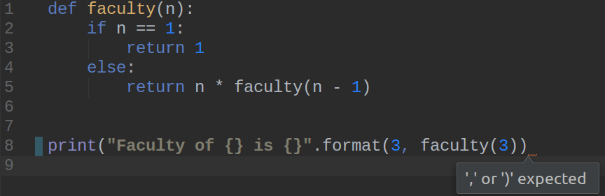
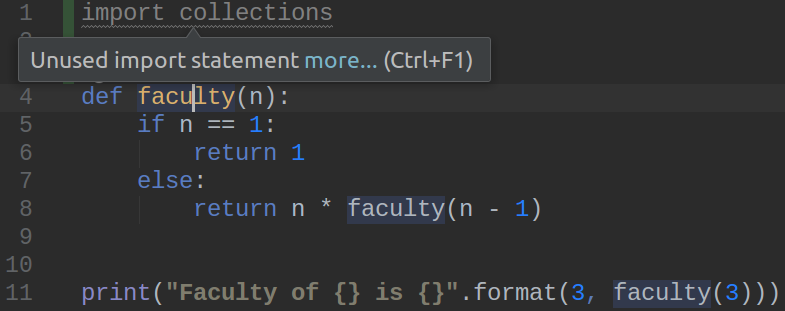
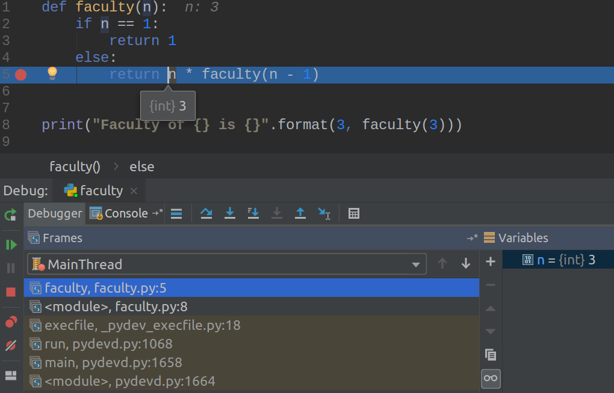
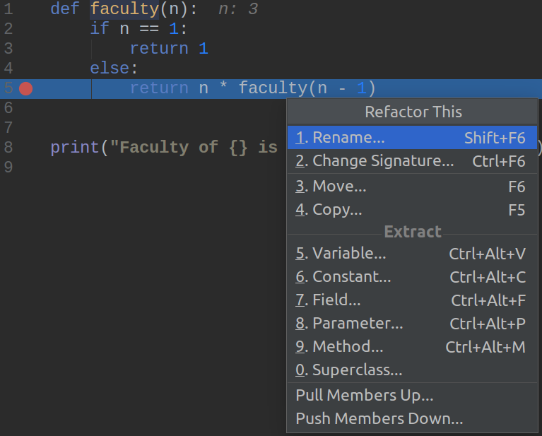

Python++
linux.conf.au 2019
Jan Groth
About me
- DevOps Engineer at Versent* in Sydney**
- Developer Background
(*) We are hiring
(**) In Sydney and Melbourne
About this talk
- Here are 10 Python features, now start using them
- I'm not a Python guru
- Things that I found helpful when I switched to Python
What year is this?
- Most popular movie: 'The Dark Knight'
- 'Lehman Brothers' file for bankruptcy
- 'Spotify' launches in Sweden
- Lady Gaga has two number-one singles with 'Just Dance' and 'Poker Face'
2008
Python 3.0 was released on December 3, 2008.
It was designed to rectify fundamental design flaws in the language—the changes required could not be implemented while retaining full backwards compatibility with the 2.x series, which necessitated a new major version number.
Source: Wikipedia
Best reason to stop using Python 2.7 now:
Python versions & dependencies
- One Python environment per project
- Dependencies as unspecific as possible
- Only direct dependencies
- Version numbers only when required
-
Don't use the system environment
requirements.txt
boto3==1.9.71
botocore==1.12.71
docutils==0.14
jmespath==0.9.3
python-dateutil==2.7.5
PyYAML==3.13
s3transfer==0.1.13
six==1.12.0
urllib3==1.24.1
boto3
PyYAML
Tip #1
Stay ahead of Python's versions
- Use Python 3
- Use a tool to manage dependencies
- venv
- pipenv
- docker & venv
Readability
Why is touch-typing useful?
Following coding conventions makes it easier to process code.
CONSTANTS_IN_UPPERCASE = 123
variables_are_lowercase = 'OH YES!'
def methods_are_lowercase_too():
pass
def all_use_kebap_case():
pass
Write once, read many times.
index.py
rewards-calculation-lambda.py
# uses supplied credentials to create new sftp client
def sftp_client(username, password):
pass
def create_sftp_client(username, password):
pass
# scale out if less than 3 instances
if len(current_instances) < 3:
add_instance()
if should_scale_out(current_instances):
add_instance()
Tip #2
Use language conventions.
Make an effort to find good names.
Writing beautiful code
There is beauty in simplicity.
counter = 0
while counter < 5:
print(counter)
counter += 1
for i in range(5):
print(i)
Using a loop to create a list
symbols = '$¢£¥€¤'
codes = []
for symbol in symbols:
codes.append(ord(symbol))
>>> [36, 162, 163, 165, 8364, 164]
The same, using list comprehension
codes = [ord(symbol) for symbol in symbols]
symbols = '$¢£¥€¤'
codes = []
for symbol in symbols:
codes.append(ord(symbol))
symbols = '$¢£¥€¤'
codes = [ord(symbol) for symbol in symbols]
Commenting every single line is essential...
..if you are writing in Assembler.
clear: ; initialize display...
; call BIOS video driver to
mov ah,15 ; get current display mode:
int 10h ; returns AL = mode, and
; AH = no. of columns.
cmp al,7 ; if we are in graphics modes
je clear0 ; (modes 4,5,6) then exit
cmp al,3 ; but if we are in mode 0-3
ja clear9 ; or 7 then continue.
In Python not so much.
def pfPasswordHash(arg):
# Randomise Salt
salt = os.urandom(6)
# Convert String to Byte Array
res = arg.encode()
# Hash through 10000 times.
for lp in range(10000):
# Always initialize hashlib, because [...]
m = hashlib.sha256()
# Swap between the two inputs into the digest based on loop number
m.update(res) if lp % 2 else m.update(salt)
m.update(salt) if lp % 2 else m.update(res)
# Finish the digest
res = m.digest()
def pfPasswordHash(arg):
# Randomise Salt
salt = os.urandom(6)
# Convert String to Byte Array
res = arg.encode()
# Hash through 10000 times.
for lp in range(10000):
# Always initialize hashlib, because [...]
m = hashlib.sha256()
# Swap between the two inputs into the digest based on loop number
m.update(res) if lp % 2 else m.update(salt)
m.update(salt) if lp % 2 else m.update(res)
# Finish the digest
res = m.digest()
Tip #3
Try to write code that is both functional and simple.
Use Python idioms where you can.
Comment only what you cannot say in code.
Classes
A basic 'calculator'
base = 10
def multiply(number):
return base * number
def add(number):
return base + number
print(multiply(5))
print(add(7))
base = 10
def multiply(number):
return base * number
def add(number):
return base + number
print(multiply(5))
print(add(7))
base = 13
print(multiply(5))
print(add(7))
base = 10
def multiply(number):
return base * number
def add(number):
return base + number
print(multiply(5))
print(add(7))
base = 13
print(multiply(5))
print(add(7))
Using classes to redesign the calculator
- A class is a blueprint for objects
- An object encapsulates data as well as methods
- Think of objects as nouns and of methods as verbs
API first...
base_ten_calc = Calculator(base=10)
print(base_ten_calc.multiply_by(5))
print(base_ten_calc.add(7))
base_five_calc = Calculator(base=5)
print(base_five_calc.multiply_by(5))
print(base_five_calc.add(7))
API first...
base_ten_calc = Calculator(base=10)
print(base_ten_calc.multiply_by(5))
print(base_ten_calc.add(7))
base_five_calc = Calculator(base=5)
print(base_five_calc.multiply_by(5))
print(base_five_calc.add(7))
Implementation
class Calculator:
def __init__(self, base):
self.base = base
def multiply_by(self, number):
return self.base * number
def add(self, number):
return self.base + number
Implementation
class Calculator:
def __init__(self, base):
self.base = base
def multiply_by(self, number):
return self.base * number
def add(self, number):
return self.base + number
Implementation
class Calculator:
def __init__(self, base):
self.base = base
def multiply_by(self, number):
return self.base * number
def add(self, number):
return self.base + number
A more real-world example -
Syncing a file between SFTP and S3
s2s_sync = Sftp2S3(server_name='a.b.c', bucket_name='my-bucket')
s2s_sync.sync_file('foo.txt')
s2s_sync.sync_file('baz/bar.txt')
A more real-world example -
Syncing a file between SFTP and S3
s2s_sync = Sftp2S3(server_name='a.b.c', bucket_name='my-bucket')
s2s_sync.sync_file('foo.txt')
s2s_sync.sync_file('baz/bar.txt')
Implementation (idea)
class Sftp2S3:
def __init__(self, server_name, bucket_name):
self.bucket = boto3.resource('s3').Bucket(bucket_name)
self.sftp_server = self._init_sftp(server_name)
def _init_sftp(self, server_name): pass
def _needs_sync(self, file_name): pass
def _copy_from_sftp(self, file_name): pass
def sync_file(self, file_name):
if (self._needs_sync(file_name)):
self._copy_from_sftp(file_name)
Implementation (idea)
class Sftp2S3:
def __init__(self, server_name, bucket_name):
self.bucket = boto3.resource('s3').Bucket(bucket_name)
self.sftp_server = self._init_sftp(server_name)
def _init_sftp(self, server_name): pass
def _needs_sync(self, file_name): pass
def _copy_from_sftp(self, file_name): pass
def sync_file(self, file_name):
if (self._needs_sync(file_name)):
self._copy_from_sftp(file_name)
Implementation (idea)
class Sftp2S3:
def __init__(self, server_name, bucket_name):
self.bucket = boto3.resource('s3').Bucket(bucket_name)
self.sftp_server = self._init_sftp(server_name)
def _init_sftp(self, server_name): pass
def _needs_sync(self, file_name): pass
def _copy_from_sftp(self, file_name): pass
def sync_file(self, file_name):
if (self._needs_sync(file_name)):
self._copy_from_sftp(file_name)
This is just a sneak peek into classes
- Re-use code elsewhere
- Utilize inheritance
- Implement your own generators, collections, ...
- And ...
Unit testing
class TestCalculator(TestCase):
def test_multiply_with_zero_is_zero(self):
# setup
calc = Calculator(29)
# exercise
result = calc.multiply_by(0)
# verify
self.assertEqual(0, result)
Tip #4
Try to encapsulate behaviour as well as state.
Learn how to use classes - they are the door opener to structured coding
The right tool for the job
What does this code print?

...not much
Removing unused imports...
Reformatting according to Python standard...

Throwing in a breakpoint...
Changing a method name across the whole project?
Tip #5
Python is a high-level programming language.
Use an IDE.
Just because you can.
Python++
Using Jinja to generate Jenkins pipelines
env:
sources:
- master
- development
...
SOURCE_ENVS = ['master', 'development']
...
SOURCE_ENVS = {{ env.sources }} # Does not come out as a groovy literal...
Using Jinja to generate Jenkins pipelines
env:
sources:
- master
- development
...
SOURCE_ENVS = ['master', 'development']
...
SOURCE_ENVS = {{ env.sources | to_groovy_list }} # Custom Jinja filter...
Registering a custom Jinja filter
from jinja2 import Environment
jinja_env = Environment() # [...]
jinja_env.filters['quoted'] = quoted
jinja_env.filters['to_groovy_list'] = to_groovy_list
def quoted(text):
return "'{}'".format(text)
def to_groovy_list(list):
return '[{}]'.format(', '.join(map(quoted, list)))
Registering a custom Jinja filter
from jinja2 import Environment
jinja_env = Environment() # [...]
jinja_env.filters['quoted'] = quoted
jinja_env.filters['to_groovy_list'] = to_groovy_list
def quoted(text):
return "'{}'".format(text)
def to_groovy_list(list):
return '[{}]'.format(', '.join(map(quoted, list)))
The same, using a decorator
jinja_env = Environment() # [...]
def custom_filter(func):
jinja_env.filters[func.__name__] = func
@custom_filter
def quoted(text):
return "'{}'".format(text)
@custom_filter
def to_groovy_list(list):
return '[{}]'.format(', '.join(map(quoted, list)))
The same, using a decorator
jinja_env = Environment() # [...]
def custom_filter(func):
jinja_env.filters[func.__name__] = func
@custom_filter
def quoted(text):
return "'{}'".format(text)
@custom_filter
def to_groovy_list(list):
return '[{}]'.format(', '.join(map(quoted, list)))
Implementing a CLI tool
query-nexus.py \
--nexus-url 'https://nexus.local' \
--repo 'maven-releases' \
--group 'com.company.ms' \
--artifact 'my-api' \
--version '1.0.8'
Using argparse
parser = argparse.ArgumentParser('Get Swagger URL')
parser.add_argument('--nexus-url', nargs='?', default='…', help='…')
parser.add_argument('--repo', nargs='?', default='…', help='…')
parser.add_argument('--group', nargs='?', default='…', help='…')
parser.add_argument('--artifact', nargs='?', help='…')
parser.add_argument('--version', nargs='?', help='…')
parser.add_argument('--debug', action='store_true')
args = parser.parse_args()
Using click
@click_command
@click.option('--nexus-url', '-n', default='…', help='…')
@click.option('--repo', '-r', default='…', help='…')
@click.option('--group', '-g', default='…', help='…')
@click.option('--artifact', '-a', default='…', help='…')
@click.option('--version', '-v', default='…', help='…')
@click.option('--debug', '-d', default='…', help='…')
def retrieve_swagger_url(nexus_url, repo, group, artefact, version, debug):
pass
Tip #6
Look around.
That's all I have ☺
I hope you find it useful.
Alternatively, ...
Here’s the plan:
When someone uses a feature you don’t understand, simply shoot them. This is easier than learning something new, and before too long the only living coders will be writing in an easily understood, tiny subset of Python 0.9.6 ;-)
Source: Tim Peters, Python core developer
This Talk:
jangroth.github.io/linuxconf2019
References and further reading: